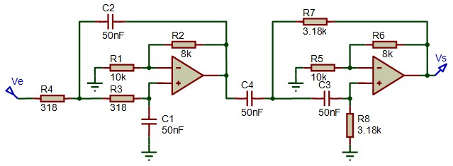

Introduction
Les courbes de Bode
Introduction
Tracé des courbes de Bode
Comportement Asymptotique du module
Comportement Asymptotique de la phase
Bibliothèque graphique de Bode
Tracé du produit h1(f) × h2(f)
Tracé du rapport h1(f) / h2(f)
Exemple
Filtres passe-bas du premier ordre
Introduction
Courbe du module
Courbe de la phase
Réalisation à l'aide d'un filtre passif
Réalisation à l'aide d'un filtre actif
Filtres passe-haut du premier ordre
Introduction
Courbe du module
Courbe de la phase
Réalisation à l'aide d'un filtre passif
Réalisation à l'aide d'un filtre actif
Filtres passe-bas du 2ème ordre
Introduction
Courbe du module
Courbe de la phase
Réalisation à l'aide d'un filtre passif
Réalisation à l'aide d'un filtre actif
Filtres passe-haut du 2ème ordre
Filtres passe-bande du 2ème ordre
Introduction
Courbe du module
Courbe de la phase
Réalisation à l'aide d'un filtre actif
Calcul de f1 et f2
Passe Bande à Large Bande

Les Filtres Analogiques
Introduction
Un filtre est un dispositif électronique dont le gain varie en fonction de la fréquence. Il permet donc de laisser passer certains signaux tout en bloquant d'autres. L'art du filtrage réside dans la conception de circuits capables de transmettre les signaux utiles et de supprimer les signaux indésirables.
Un filtre passe-bas, par exemple, laisse passer les signaux de basses fréquences et bloque les signaux de fréquences élevées. La figure ci-dessous illustre la réponse en fréquence idéale d'un filtre passe-bas, représentée par une courbe montrant le gain en fonction de la fréquence. La fréquence de coupure, notée fo définit la limite de la bande passante, correspondant à l'intervalle de fréquences [0, fo]. Toute onde sinusoïdale entrant dans le filtre avec une fréquence située dans cette bande passante sera transmise à la sortie. En revanche, une onde sinusoïdale d'une fréquence supérieure à fo sera complètement atténuée

Dans la pratique, on ne sait pas réaliser un filtre parfait (idéal). Les filtres réels ont une réponse semblable à celle représentée sur la Figure ci-dessous.

Différents Types de filtres
Les filtres les plus couramment utilisés sont les suivants:
Les courbes de Bode
La fonction de transfert h(f) d'un filtre permet de déterminer le signal de sortie pour chaque valeur de f. Le fait que les filtres sont réalisés à l'aide de selfs et de condensateurs dont les impédances comporte une composante imaginaire (jLω) ou (1/jCω), la fonction de transfert est complexe. Pour calculer le signal de sortie, il faut extraire le module et l'argument de la fonction de transfert.
- Le module H(f) correspond au gain du filtre. Il permet de calculer l'amplitude du signal de sortie,
- L'argument φ(f) correspond à la phase du filtre. Il permet de calculer le déphasage du signal de sortie par rapport au signal d'entrée,
Les courbes de Bode représentent le tracé de H(f), et φ(f) en fonction de la fréquence. Elles permettent d'avoir un aperçu rapide du comportement fréquentiel du filtre.
- Le tracé se fait sur une échelle de fréquence logarithmique,
- Le gain est représenté en Décibels: \(H_{dB}=20Log_{10}(H) \)
- La phase peut être représentée en degrés ou en radians

Tracé des courbes de Bode
Avant de commencer l'étude concrète des filtres, nous allons faire une petite étude mathématique de quelques fonctions complexes et tracer leurs courbes de Bode. Ceci nous simplifiera beaucoup les choses par la suite.
On va faire l'étude d'une fonction du premier ordre simple
\( h(f) = 1 + j \frac{f}{f_o} \)
Cette fonction a un module est une phase :
$$ H(f)=\sqrt{1+\left( \frac{f}{f_o} \right)^2} $$ $$ φ(f)=Arctg\left( \frac{f}{f_o} \right) $$Comportement Asymptotique du module :
- \(H_{dB}(f)=20log(H(f)) \; = \; 10log \left( 1+\left( \frac{f}{f_o} \right)^2 \right) \)
- Quand \( f \ll f_o \) , \(H_{dB}(f)\) se confond avec 10log(1)=0 : asymptote horizontale
- Quand \( f \gg f_o \) , \(H_{dB}(f)\) se confond avec \( H_\infty = 20log\left( \frac{f}{f_o}
\right)=20log(f)-20log(f_o) \)
L'axe des x n'est pas gradué en f mais en x=log(f), donc :
\(H_{\infty} = 20x - 20x_o\) C'est une droite de pente 20dB/décade qui coupe l'axe des f au point f=fo
On a une pente de 20dB/décade car \( H_\infty(10f) - H_\infty(f) = 20log(10f) - 20log(f) = 20log(10) = 20 \) - Quand f = fo , \( H_{dB}(f_o) = 10 log(2) = 3dB \)
Comportement Asymptotique de la phase :
- \( φ(f)=Arctg\left( \frac{f}{f_o} \right) \)
- \( f \ll f_o \; , \; φ(f) \to arctg(0) = 0 \) : Asymptote horizontale passant par 0
- \( f \gg f_o \; , \; φ(f) \to arctg(\infty) = \pi / 2 \) : Asymptote horizontale passant par \(\pi / 2\)
- \( f = f_o \; , \; φ(f) = arctg(1) = \pi / 4 = 45^o \)
Bibliothèque graphique de Bode
Voici un ensemble d'études Asymptotiques pour quelques fonction de transfert usuelles
\( H_o=|h_o| \)

Tracé du produit h1(f) × h2(f)
- Module : \( H(f) = H_1(f) \times H_2(f) \Rightarrow H_{dB}(f) = H_{1dB}(f) + H_{2dB}(f) \)
- Argument: \( φ(f) = φ_1(f) + φ_2(f)\)
- En définitive il faut faire la somme des modules et des phases
Tracé du rapport h1(f) / h2(f)
- Module : \( H(f) = \frac{H_1(f)}{H_2(f)} \Rightarrow H_{dB}(f) = H_{1dB}(f) - H_{2dB}(f) \)
- Argument: \( φ(f) = φ_1(f) - φ_2(f)\)
- En définitive il faut faire la différence des modules et des phases
Exemple
On va tracer les courbes de Bode de la fonction de transfert:
$$ h(f)= \frac{1+j\frac{f}{10000} }{1+j\frac{f}{1000}} $$
Nous avons le rapport de deux premiers ordre \( 1+j\frac{f}{f_o} \)
Pour le numérateur, fo=10kHz, pour le dénominateur, fo=1kHz
Courbe du gain
- On prend un papier semi-log. On renseigne l'axe des f de sorte que les deux fréquences (1kHz et 10 kHz) soient situées à peu près au milieu. On renseigne l'axe vertical avec le 0 à peu près au milieu
- On utilise la bibliothèque de Bode pour tracer les asymptotes du numérateur et du dénominateur (Courbes vertes)
- On trace la différence (N - D) des asymptotes (courbe bleu). Pour les parties obliques, on fait la différence des pentes
- Tracer la courbe définitive (courbe rouge) en essayant de tendre vers les asymptotes. On peut calculer un ou deux points pour améliorer la précision de la courbe
Courbe de la phase
- On prend un papier semi-log. On renseigne l'axe des f comme pour le gain,
- Graduer l'axe des y soit en radiants (placer π/2 et -π/2 ) soit en degré (placer 90° et - 90°),
- On utilise la bibliothèque de Bode pour tracer les asymptotes du numérateur et du dénominateur,
- On trace la différence (N - D) des asymptotes (courbe bleu),
- Tracer la courbe définitive (courbe rouge) en essayant de tendre vers les asymptotes. Pour
améliorer la précision de la courbe, On peut calculer la phase pour f=3kHz :
φ(3kHz) = arctan(3/10) - arctg(3/1) ≈ -0.96 rad
Filtres passe-bas du premier ordre
Ce sont les filtres dont la fonction de transfert est de la forme mathématique suivante :
$$ h(ω)=\frac{h_o}{1+j\frac{ω}{ω_o}} $$ou
$$ h(f)=\frac{h_o}{1+j\frac{f}{f_o}} $$- \(h_o\) est une constante qui peut être positive ou négative
- \(ω_o\) est la pulsation de coupure. \(f_o\) est la fréquence de coupure. \(ω_o=2 πf_o\)
Courbe du module
Le module de la fonction de transfert est :
$$ H(f)= \frac{H_o}{\sqrt{1+\left( \frac{f}{f_o} \right)^2}} $$
\(H_o=|h_o|\) est le gain statique, C'est le gain du filtre pour le
continu est les basses fréquences (Gain dans la bande passante)
On utilisant la bibliothèque graphique de Bode, on obtient :

Courbe de la phase
La phase de la fonction de transfert est :
$$ φ(f) = sπ-arctg\left( \frac{f}{f_o} \right) \quad avec \quad \left\{ \begin{array}{l}
s=0 \quad si \quad h_o \gt 0 \\
s=1 \quad si \quad h_o \lt 0
\end{array} \right.$$
On utilisant la bibliothèque graphique de Bode, on obtient :

Réalisation par filtre passif
Les filtres passifs doivent leur nom au fait qu'ils n'utilisent que des composants passifs comme des résistances, des capacités et des selfs.
Pour déterminer la fonction de transfert du filtre, il suffit de se rappeler que l'impédance d'une capacité est \(\frac{1}{jCω}\) et d'appliquer la règle du diviseur de potentiel (théorème de Millman):
$$ h(f)= \frac{V_s}{V_e} = \frac{1}{1+jRCω} = \frac{1}{1+jRC2πf}$$L'identification avec l'expression générale \(h(f)=\frac{h_o}{1+j\frac{f}{f_o}}\) donne :
- \(h_o=1\ \;,\; H_o=1 \;,\; H_{odB}=20log(H_o)=0 \)
- \(f_o= \frac{1}{2πRC}\)
- \(h_o\) positif, la phase décroît de 0 à \(-\frac{π}{2} \) (0° à -90°)
Tracé des courbes
Il suffit de reprendre les courbes du cas général et d'adapter les graduation
Prenons par exemple le cas d'un filtre avec R=16 kΩ , C = 10 nF
fo =1/( 2π RC) = 944.7 Hz ≈ 1 kHz


Calcul pour une fréquence donnée
Si on applique un signal sinusoïdal d'amplitude Ae = 5V et de fréquence fe = 2 kHz, Le signal de sortie sera un signal sinusoïdal de fréquence fe, d'amplitude H(fe) × Ae et il sera retardé par rapport au signal d'entrée de φ(fe) radiants
- H(fe) = 0.4252. Le signal de sortie aura une amplitude As = 0.4252 × 5V = 2.126V,
- φ( fe ) = -1,1317 rad. Le signal de sortie sera retardé par rapport au signal d'entrée de 1.132 rad. Pour avoir le retard en temps, il suffit de se rappeler que pour un signal sinusoïdal, on a φ = ωt. D'où : retard = 1.132 / (2×π×2000 Hz) s = 0.09 ms
Réalisation par filtre actif

Si on note Z2 = R2 // C, on obtient la structure d'un amplificateur Inverseur. La fonction de transfert sera :
\(h(f)=\frac{V_s}{V_e}=-\frac{Z_2}{R_1} \)
\( Z_2= \frac{R_2}{1+jR_2Cω} \)
$$ h(f) = \frac{-\frac{R_2}{R_1}}{1+j2πR_2Cω} $$L'identification avec l'expression générale \(h(f)=\frac{h_o}{1+j\frac{f}{f_o}}\) donne :
- \( h_o=-\frac{R_2}{R_1} \)
- \(f_o= \frac{1}{2πR_2C}\)
Tracé des courbes
Pour la courbe du gain, on calcule \(f_o\) et \(H_{0dB}\) et on les place dans la courbes du cas général
Exemple : R2 = 1.6k, R1 = 0.5k, C=10nF ⇒ fo ≈ 10kHz, Ho=3.2 , HodB ≈ 10 dB

Pour la courbe de la phase, il faut remarquer que ho est négatif, donc la phase décroît de π à π/2
Filtres passe-haut du premier ordre
Ce sont les filtres dont la fonction de transfert est de la forme mathématique suivante :
$$ h(f)=\frac{jh_o \frac{f}{f_o}}{1+j\frac{f}{f_o}} $$- \(h_o\) est une constante qui peut être positive ou négative
- \(f_o\) est la fréquence de coupure.
Courbe du module
Le module de la fonction de transfert est :
$$ H(f)= \frac{H_o \frac{f}{f_o}}{\sqrt{1+\left( \frac{f}{f_o} \right)^2}} $$
\(H_o=|h_o|\) est le le gain dans la bande passante (hautes fréquences)
On utilisant la bibliothèque graphique de Bode, on obtient :
Courbe de la phase
La phase de la fonction de transfert est :
$$ φ(f) = s\frac{π}{2}-arctg\left( \frac{f}{f_o} \right) \quad avec \quad \left\{ \begin{array}{l}
s=1 \quad si \quad h_o \gt 0 \\
s=-1 \quad si \quad h_o \lt 0
\end{array} \right.$$
On utilisant la bibliothèque graphique de Bode, on obtient :
Réalisation par filtre passif

Les filtres passifs doivent leur nom au fait qu'ils n'utilisent que des composants passifs comme des résistances, des capacités et des selfs.
Pour déterminer la fonction de transfert du filtre, il suffit de se rappeler que l'impédance d'une capacité est \(\frac{1}{jCω}\) et d'appliquer la règle du diviseur de potentiel (théorème de Millman):
$$ h(f)= \frac{V_s}{V_e} = \frac{j2πRCf}{1+j2πRCf}$$L'identification avec l'expression générale \(h(f)=\frac{jh_o \frac{f}{f_o}}{1+j\frac{f}{f_o}}\) donne :
- \(h_o=1\ \;,\; H_o=1 \;,\; H_{odB}=20log(H_o)=0 \)
- \(f_o= \frac{1}{2πRC}\)
- \(h_o\) positif, la phase \(φ(f) = \frac{π}{2}-arctg\left( \frac{f}{f_o} \right)\) décroît de \(\frac{π}{2} \) à 0 (90° à 0°)
Tracé des courbes
Il suffit de reprendre les courbes du cas général et d'adapter les graduation
Prenons par exemple le cas d'un filtre avec R=16 kΩ , C = 10 nF
fo =1/( 2π RC) = 944.7 Hz ≈ 1 kHz

Calcul pour une fréquence donnée
Si on applique un signal sinusoïdal \( V_e = A_e sin(2πf_et)\) d'amplitude Ae = 5V et de fréquence fe = 2 kHz, Le signal de sortie sera un signal sinusoïdal de fréquence fe, d'amplitude H(fe) × Ae et il sera déphasé par rapport au signal d'entrée de φ(fe) radiants
- H(fe) = 0.89, Le signal de sortie aura une amplitude As = 0.89 × 5V = 4.47V,
- φ(fe) = 0.46 rad. Le signal de sortie sera en avance par rapport au signal d'entrée de 0.46
rad.
Pour avoir l'avance en temps, il suffit de se rappeler que pour un signal sinusoïdal, on a φ = ωt. D'où :
avance = 0.46 / (2×π×2000 Hz) s = 36.7 µs

Réalisation par filtre actif

\( Z_2=R//C_2= \frac{R}{1+jRC_2ω} \)
\(Z_1= \frac{1}{jC_1ω} \)
\(h(f)=\frac{V_s}{V_e}=-\frac{Z_2}{Z_1} \)
$$ h(f) = -\frac{jRC_1ω}{1+jRC_2ω} = -\frac{j2πRC_1f}{1+j2πRC_2f}$$L'identification avec l'expression générale \(h(f)=\frac{jh_o\frac{f}{f_o}}{1+j\frac{f}{f_o}}\) donne :
- \( h_o=-\frac{C_1}{C_2} \)
- \(f_o= \frac{1}{2πRC_2}\)
Tracé des courbes
Pour la courbe du gain, on calcule \(f_o\) et \(H_{0dB}\) et on les place dans la courbes du cas général
Exemple : R = 16k, C1 = 3.3nF, C2=1nF ⇒ fo ≈ 10kHz, Ho=3 , HodB=10.37 dB ≈ 10 dB

Pour la courbe de la phase, il faut remarquer que ho est négatif, donc la phase décroît de π à π/2

Si on applique un signal sinusoïdal \( V_e = A_e sin(2πf_et)\) d'amplitude Ae = 5V et de fréquence fe = 5 kHz, Le signal de sortie sera un signal sinusoïdal de fréquence fe, d'amplitude H(fe) × Ae et il sera déphasé par rapport au signal d'entrée de φ(fe) radiants
- H(fe) = 1.48, Le signal de sortie aura une amplitude As = 1.48 × 5V = 7.4V,
- φ(fe) = -2.037 rad. Le signal de sortie sera en retard par rapport au signal d'entrée de 2.037
rad.
Pour avoir le déphasage en temps, il suffit de se rappeler que pour un signal sinusoïdal, on a φ = ωt. D'où :
déphasage = 2.037 / (2×π×5000 Hz) s = 65 µs
Filtres passe-bas du 2ème ordre
Les filtres passe-bas de second ordre ont une fonction de transfert de la forme :
$$ h(ω) = \frac{h_o}{1+j2\zeta\frac{ω}{ω_o}-\left( \frac{ω}{ω_o}\right)^2} $$ $$ h(f) = \frac{h_o}{1+j2\zeta\frac{f}{f_o}-\left( \frac{f}{f_o}\right)^2} $$- \(h_o\) : Constante qui peut être positive ou négative
- \(f_o\) : Fréquence de brisure. Nous l'appellerons fréquence de coupure bien que cela n'est pas exact car l'atténuation correspondante est différente de 3 dB
- \(\zeta \) : (zeta) Coefficient d'amortissement = \( \frac{1}{2Q} \) avec Q : Coefficient de
surtension.
Pour \(\zeta \le 0.7 \) le gain présente un maximum à la fréquence de résonance \( f_r = f_o \sqrt{1-2\zeta ^2} \)
Courbe du Gain
$$H(f) = \frac{H_0}{\sqrt{\left(1 - \left(\frac{f}{f_0}\right)^2\right)^2 + 4 \zeta^2 \left(\frac{f}{f_0}\right)^2}}$$On utilise la bibliothèque graphique pour tracer les asymptotes. Ensuite, ça ce complique.
Avec le filtre passe bas de premier ordre, il était facile de tracer la courbe du gain car, pour f=fo, elle passe toujours 3dB en dessous de l'asymptote
Avec les filtres de second ordre, HdB(fo) dépend de ζ. En plus, l'étude de la dérivé montre que la courbe du gain présente une résonance à la fréquence \( f_r = f_o \sqrt{1-2\zeta ^2} \) pour les valeurs de ζ ≤ 7. On aura une courbe différente pour chaque valeur de ζ. Le tableau ci-dessous donne quelques valeurs pour faciliter le tracé.
Ce réseau de courbe permet de faire deux remarques importantes :
- Le filtre de 2ème ordre a une coupure de 40 dB/décade alors que le premier ordre a seulement 20 db/décade
- L'amortissement ζ = 0.5 donne la meilleure bande passante
Courbe de la phase
Rappelons la fonction de transfert : \( h(f) = \frac{h_o}{1+j2\zeta\frac{f}{f_o}-\left( \frac{f}{f_o}\right)^2} \)
Nous savons que \( φ\left( \frac{z_1}{z_2}\right)=φ(z_1)-φ(z_2) \)
Pour le Numérateur :
$$ φ(N)\ =\begin{cases} 0 &si &h_o \gt 0\\ \pi &si &h_o \lt 0\\ \end{cases} $$
Pour le Dénominateur :
On a un nombre complexe z = a + jb, on a souvent tendance à dire rapidement que \(φ(z)=arctan\left( \frac{b}{a} \right) \). Ceci n'est pas tout à fait exacte car la fonction arctan() est définie seulement dans l'intervalle (−π/2,π/2) correspondant au deux cadrans droite du cercle trigonométrique. Pour cette raison, il faut prendre en compte le quadrant dans lequel se trouve z et faire les ajustements nécessaires. Cela va dépendre des signes de a et de b.
- Si a > 0, alors \(φ(z)=arctan\left( \frac{b}{a} \right) \)
- Si a < 0 et b ≥ 0, alors \(φ(z)=arctan\left( \frac{b}{a} \right) + π \)
- Si a < 0 et b < 0, alors \(φ(z)=arctan\left( \frac{b}{a} \right) - π \)
- Si a = 0 :
- si b > 0 , alors \(φ(z)= \frac{π}{2} \)
- si b > 0 , alors \(φ(z)= -\frac{π}{2} \)
- Si b = 0 , alors φ(z) est indéterminé (car le nombre complexe est nul)
Pour notre dénominateur, \( a = 1-\left( \frac{f}{f_o}\right)^2 \), son signe depend de la position de f par rapport à fo. Par contre le terme \(b=2\zeta\frac{f}{f_o}\) est toujours positif. On obtient :
\[ φ(x) = \begin{cases} Arctg\frac{2\zeta\frac{f}{f_o}}{1-\left(\frac{f}{f_0}\right)^2} &si &f \le f_o\\ \frac{π}{2} &si& f = f_o\\ Arctg\frac{2\zeta\frac{f}{f_o}}{1-\left(\frac{f}{f_o}\right)^2}+\pi &si &f \gt f_o\\ \end{cases} \]
Réalisation à l'aide d'un filtre passif
$$ h(f)= \frac{1}{1+jRCω-LCω^2} $$si On identifie avec \( h(ω) = \frac{h_o}{1+j2\zeta\frac{ω}{ω_o}-\left( \frac{ω}{ω_o}\right)^2} \) , on obtient :
- \(h_o=1\)
- \(f_o= \frac{1}{2π\sqrt{LC}} \)
- \(\zeta = \frac{R}{2}\sqrt{\frac{C}{L}} \)
Exemple :
Si on prend L = 50 mH, calculer R et C pour avoir fo = 1000 Hz et ζ = 0.5
On trouve : C = 506.6 nF, R = 314 Ω
Réalisation à l'aide d'un filtre actif
Un filtre actif de 2ème ordre peut être réalisés à l'aide de plusieurs structures à ampli-op différentes. Nous avons retenu la structure passe-bas de Sallen-Key

La fonction de transfert de cette structure est :
$$ F(ω)= \frac{k}{1+j(3-k)RCω-R^2C^2ω^2}$$k est le gain (positif) d'un amplificateur. Si on le réalise à l'aide d'un amplificateur non inverseur à Ampli-Op, on a k=1+R2/R1. On obtient la figure :
Si on identifie la fonction de transfert de Sallen-Key avec l'expression générale d'un filtre passe bas de 2ème ordre \( h(ω) = \frac{h_o}{1+j2\zeta\frac{ω}{ω_o}-\left( \frac{ω}{ω_o}\right)^2} \) , on obtient :
- \( ω_o = \frac{1}{RC} \;,\; f_o= \frac{1}{2πRC} \)
- k = 3-2ζ
- \(h_o=k\)
En général, quand on veut réaliser un filtre, on se donne la fréquence de coupure fo et le coefficient d'amortissement ζ. fo permet de calculer la valeur de R après avoir fixé une valeur pour la capacité C. La valeur de ζ permet de calculer le gain k de l'amplificateur non inverseur ce qui donne les valeurs de R1 et R2
Exemple :
On dédire réaliser un filtre passe bas du second ordre qui a une fréquence de coupure de fo = 2000 Hz et un facteur d'amortissement ζ= 0.5
On fixe C = 50nF, on calcule R = 1/(2πCfo) = 1.59k
k = 3 - 2ζ = 2 ⇒ 1 + R2/R1 = 2 ⇒ il suffit de prendre R2=R1 = 10k
Le gain dans la bande passante est Ho = |ho| = 2 (6dB)
Filtres passe-haut du 2ème ordre
Les filtres passe-haut de second ordre ont une fonction de transfert de la forme :
$$ h(ω) = \frac{-h_o\left( \frac{ω}{ω_o}\right)^2}{1+j2\zeta\frac{ω}{ω_o}-\left( \frac{ω}{ω_o}\right)^2} $$ $$ h(f) = \frac{-h_o\left( \frac{f}{f_o}\right)^2}{1+j2\zeta\frac{f}{f_o}-\left( \frac{f}{f_o}\right)^2} $$- \(h_o\) : Constante qui peut être positive ou négative
- \(f_o\) : Fréquence de brisure. Nous l'appellerons fréquence de coupure bien que cela n'est pas exact car l'atténuation correspondante est différente de 3 dB
- \(\zeta \) : (zeta) Coefficient d'amortissement = \( \frac{1}{2Q} \) avec Q : Coefficient de
surtension.
Pour \(\zeta \le 0.7 \) le gain présente un maximum à la fréquence de résonance \( f_r = \frac{f_o}{\sqrt{1-2\zeta ^2}} \)
Courbe du module
$$ H(f)=\frac{H_0\left(\frac{f}{f_0}\right)^2}{\sqrt{\left(1-\left(\frac{f}{f_0}\right)^2\right)^2+4 \zeta^2\left(\frac{f}{f_0}\right)^2}} $$On utilise la bibliothèque graphique pour tracer les asymptotes et on calcule quelques points pour tracer
Ce réseau de courbe permet de faire deux remarques importantes :
- Le filtre de 2ème ordre a une coupure de 40 dB/décade alors que le premier ordre a seulement 20 db/décade
- L'amortissement ζ = 0.5 donne la meilleure bande passante
Courbe de la phase
Rappelons la fonction de transfert : \( h(f) = \frac{-h_o\left( \frac{f}{f_o}\right)^2}{1+j2\zeta\frac{f}{f_o}-\left( \frac{f}{f_o}\right)^2} \)
Nous savons que \( φ\left( \frac{N}{D}\right)=φ(N)-φ(D) \)
Pour le Numérateur :
$$ φ(N)\ =\begin{cases} \pi &si &h_o \gt 0\\ 0 &si &h_o \lt 0\\ \end{cases} $$
Pour le dénominateur :
On a un nombre complexe z = a + jb
\( a = 1-\left( \frac{f}{f_o}\right)^2 \), son signe depend de la position de f par rapport à fo.
\(b=2\zeta\frac{f}{f_o}\) est toujours positif.
On obtient :
\[ φ(x) = \begin{cases} Arctg\frac{2\zeta\frac{f}{f_o}}{1-\left(\frac{f}{f_0}\right)^2} &si &f \lt f_o\\ \frac{π}{2} &si& f = f_o\\ Arctg\frac{2\zeta\frac{f}{f_o}}{1-\left(\frac{f}{f_o}\right)^2}+\pi &si &f \gt f_o\\ \end{cases} \]Réalisation à l'aide d'un filtre actif
Un filtre actif de 2ème ordre peut être réalisés à l'aide de plusieurs structures à ampli-op différentes. Nous avons retenu la structure passe-haut de Sallen-Key
La fonction de transfert de cette structure est :
$$ F(ω)= \frac{-kR^2C^2ω^2}{1+j(3-k)RCω-R^2C^2ω^2}$$k est le gain (positif) d'un amplificateur. Si on le réalise à l'aide d'un amplificateur non inverseur à Ampli-Op, on a k=1+R2/R1. On obtient la figure :
Si on identifie la fonction de transfert de Sallen-Key avec l'expression générale d'un filtre passe haut de 2ème ordre \( h(ω) = \frac{-h_o\left( \frac{ω}{ω_o}\right)^2}{1+j2\zeta\frac{ω}{ω_o}-\left( \frac{ω}{ω_o}\right)^2} \) , on obtient :
- \( ω_o = \frac{1}{RC} \;,\; f_o= \frac{1}{2πRC} \) ce qui permet de calculer R et C,
- k = 3-2ζ ce qui permet de calculer R1 et R2
- \(h_o=k\)
Exemple :
On dédire réaliser un filtre passe bas du second ordre qui a une fréquence de coupure de fo = 2000 Hz et un facteur d'amortissement ζ= 0.5
On fixe C = 50nF, on calcule R = 1/(2πCfo) = 1.59k
k = 3 - 2ζ = 2 ⇒ 1 + R2/R1 = 2 ⇒ il suffit de prendre R2=R1 = 10k
Le gain dans la bande passante est Ho = |ho| = 2 (6dB)
Filtres passe-bande du 2ème ordre
Les filtres passe-bande de second ordre ont une fonction de transfert de la forme :
$$ h(ω) = \frac{jh_o\left( \frac{ω}{ω_o}\right)}{1+j\frac{\Delta ω}{ω_o}\frac{ω}{ω_o}-\left( \frac{ω}{ω_o}\right)^2} $$ $$ h(f) = \frac{jh_o\left( \frac{f}{f_o}\right)}{1+j\frac{\Delta f}{f_o} \frac{f}{f_o}-\left( \frac{f}{f_o}\right)^2} $$- \(f_o\) est la fréquence centrale du filtre
- \( \Delta f = f_2 - f_1\) est la bande passante à 3 dB (\(\Delta ω = 2 \pi \Delta f\))
- \( Q=\frac{ω_o}{\Delta ω} = \frac{f_o}{\Delta f} = \frac{1}{2\zeta}\) est le facteur de qualité du filtre.
Courbe du module
$$ H=\frac{H_0\left(\frac{f}{f_0}\right)}{\sqrt{\left(1-\left(\frac{f}{f_0}\right)^2\right)^2+\left(\frac{\Delta f}{f_0}\right)^2\left(\frac{f}{f_0}\right)^2}} $$Pour tracer les courbes on aura besoin de quelques valeur remarquables de H
- Le gain maximum : \( H(f_o)=H_o\frac{f_o}{\Delta f}=H_oQ = \frac{H_o}{2\zeta} \)
- Gain pour \(f=2f_o\) et \( f=f_o/2 \) : \( H(2f_o)=H(f_o/2)=\frac{H_o}{\sqrt{\frac{9}{4}-\frac{1}{Q^2}}} \)
- Gain pour \(f=f_1\) et \(f=f_2\) : \( H(f_1)=H(f_2)=\frac{H(f_o)}{\sqrt{2}} = \frac{H_oQ}{\sqrt{2}} \)
Courbe de la phase
Rappelons la fonction de transfert : \( h(f) = \frac{jh_o\left( \frac{f}{f_o}\right)}{1+j\frac{\Delta f}{f_o} \frac{f}{f_o}-\left( \frac{f}{f_o}\right)^2} \)
Nous savons que \( φ\left( \frac{N}{D}\right)=φ(N)-φ(D) \)
Pour le Numérateur :
$$ φ(N)\ =\begin{cases} \frac{\pi}{2} &si &h_o \gt 0\\ -\frac{\pi}{2} &si &h_o \lt 0\\ \end{cases} $$
Pour le dénominateur :
On a un nombre complexe z = a + jb
\( a = 1-\left( \frac{f}{f_o}\right)^2 \), son signe depend de la position de f par rapport à fo.
\( b=j\frac{\Delta f}{f_o} \frac{f}{f_o} \) est toujours positif.
On obtient :
\[ φ(x) = \begin{cases} Arctg\frac{2\zeta\frac{f}{f_o}}{1-\left(\frac{f}{f_0}\right)^2} &si &f \lt f_o\\ \frac{π}{2} &si& f = f_o\\ Arctg\frac{2\zeta\frac{f}{f_o}}{1-\left(\frac{f}{f_o}\right)^2}+\pi &si &f \gt f_o\\ \end{cases} \]Réalisation à l'aide d'un filtre actif
Ces filtres peuvent être réalisés à l'aide de plusieurs structures à ampli-op différentes, nous avons retenu la structure de Delyiannis dont la fonction de transfert est :
$$F(p)=\frac{-j\frac{kRC}{k-1}\omega }{1+j\left( 2-\frac{1}{k-1} \right)RC\omega -{{R}^{2}}{{C}^{2}}{{\omega }^{2}}}$$L'identification avec :
$$ h(ω) = \frac{jh_o\left( \frac{ω}{ω_o}\right)}{1+j\frac{\Delta ω}{ω_o}\frac{ω}{ω_o}-\left( \frac{ω}{ω_o}\right)^2} $$- \( ω_o = \frac{1}{RC} \;,\; f_o= \frac{1}{2πRC} \) ce qui permet de calculer R et C,
- \(2-\frac{1}{k-1}=\frac{\Delta f}{{{f}_{o}}} \;\Rightarrow\;k=1+\frac{1}{2-\tfrac{\Delta f}{{{f}_{o}}}}\) , sachant que \( k=1+\frac{R_2}{R_1} \) on obtient : \(\frac{{{R}_{1}}}{{{R}_{2}}}=2-\frac{\Delta f}{{{f}_{o}}} \)
- \( h_o = -\frac{k}{k-1}=\frac{\Delta f}{f_o}-3 \) , Le calcul de \(h_o\) peut être utile pour le tracé de courbes ou le calcul du gain
Exemple :
On désire réaliser un filtre passe bande qui a une fréquence centrale fo=10kHz et une largeur de bande à 3 dB Δf = 5kHz
- On fixe C=10nF et on calcule R=1,59k
- \(\frac{R_1}{R_2} = 1.5 \), on prend \(R_1=15k\quad,\quad R_2 = 10k\)
Calcul de f1 et f2
Quand on trace la courbe de gain en dB sur ue échelle logarithmique en x, on obtient une courbe symétrique autour de fo. Ceci est trompeur car l'échelle n'est pas linéaire. Si on trace sur une échelle linéaire, on constate que la courbe du gain n'est pas symétrique. Il en est de même des fréquence de coupure f1 et f2
Le calcul des valeurs de f1 et f2 n'est pas trivial.
Le gain pour ces fréquences est égal au gain max divisé par \(\sqrt2\) (-3dB). Elles constituent donc la solution de l'équation \( H(f) = H(f_o)\sqrt2 \)
$$ \frac{H_o\left(\frac{f}{f_0}\right)}{\sqrt{\left(1-\left(\frac{f}{f_0}\right)^2\right)^2+ \left(\frac{1}{Q}\right)^2\left(\frac{f}{f_0}\right)^2}} = \frac{H_oQ}{\sqrt{2}} $$si on pose \( u=\frac{f}{f_o} \) on obtient après simplification :
\( Q^2u^4-(2Q^2+1)u^2+Q^2 = 0 \)
Si on note \( x=u^2 \) on obtient une equation du second ordre :
\( Q^2x^2-(2Q^2+1)x+Q^2 = 0 \)
Le discriminant est :
\( \Delta = 4Q^2+1 \)
Les solutions en x sont :
\( x1 =\frac{2Q^2+1 - \sqrt{4Q^2+1}}{2Q^2} \)
\( x2 =\frac{2Q^2+1 + \sqrt{4Q^2+1}}{2Q^2} \)
Les solution en f sont données par :
\( \frac{f}{fo}=u=\sqrt{x} \)
\(f1 = f_o\sqrt{x1}\)
\(f2 = f_o\sqrt{x2}\)
Passe Bande à Large Bande
Pour réaliser un filtre passe-bande à large bande passante, il est recommandé d'utiliser un filtre passe haut et un filtre passe-bas en cascade.
La fréquence de coupure basse \(f_{ol}\) correspond à la fréquence de coupure du filtre passe haut. La fréquence de coupure haute \(f_{oh}\) correspond à la fréquence de coupure du filtre passe bas.
Si \(h_{o1}\) et \(h_{o2}\) sont respectivement les gains dans la bande passante des 2 filtres. Le gain dans la bande passante du filtre résultant est \(h_o=h_{o1} \times h_{o2}\) \( (H_{odB}=h_{o1dB} + h_{o2dB}) \)
Exemple :
Réalisons un filtre passe bande tel que la fréquence de coupure basse fol = 1 kHz et la fréquence de coupure haute est foh = 10 kHz. On prendra un amortissement ζ = 0.6.
Avec les structures de Sallen-Key, si on prend C=50nF et R1=10 k on trouve :
- Passe bas, fo = 10kHz : R=318 Ω , R2 = 8 k , gain dans la bande passante: h01=1.8 (5.1 dB)
- Passe haut, fo = 1kHz : R=3.18 k , R2 = 8 k , gain dans la bande passante: h02=1.8 (5.1 dB)
- Le filtre résultant aura un gain dans la bande passante ho= 1.8 × 1.8 = 3.24 (10.2 dB)
